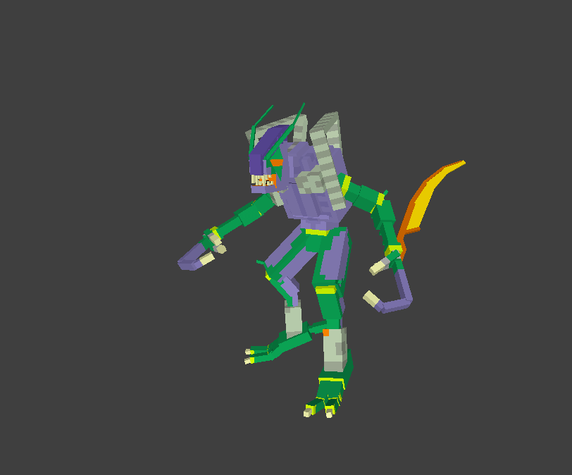
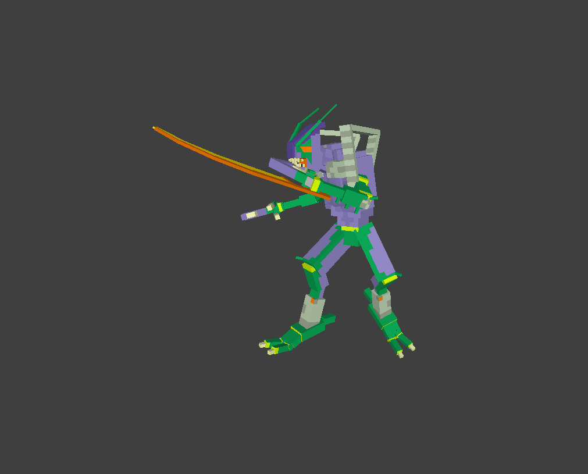
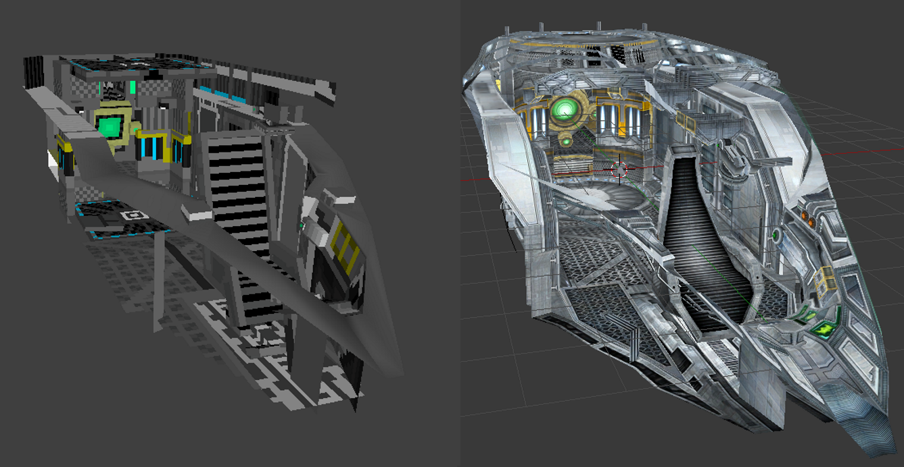
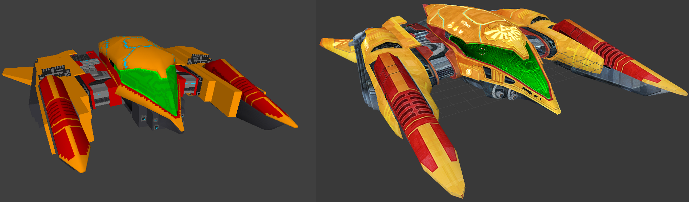

Hobbyist Game Developer, Minecraft Mod Dev, Programmer
Gaming, Math, and Science Nerd
(Hover over the above words for more info)
VR Hand-Tracked FPS
In this game environment I experiment with the accuracy and tactile-control that hand-tracked VR apps can offer. The system can recognize any hand-finger pose and--after a calibration phase--recall and identify said poses at any later time. A 'system alert' gesture is used to tell the system to look for the poses; this saves on processing power by only running the pose-checker when the user intends to activate a pose.
I also built the custom scipts that control the playing, looping, and changing of sound effects, as well as the scripts controlling the firing, charging, projectile settings, and projectile interactions. This game also features IK rigging on the player avatar, allowing arms and a full body to be visible without adding in additional tracking hardware / software.
DISCLAIMER: The assets for the player's body in this game are ripped from Metroid Prime, which I own a copy of. I in no way claim to own or have created these assets. This VR game is not and will not ever be distributed in any way, and I will not ever sell it, it's code, it's assets, or the opportunity to experience it on my personal device, nor will I ever accept any form of donation for it. This VR game is purely for me to experiment in a VR environment with hand-tracking capabilities.
_ _ _ _ _ _ _
Script-Based Record Entry System (SBRES)
SBRES first-time initialization sequenceSBRES project management screenSBRES entry logger example
SBRES is a python program I built to help me with making journal entries, engineering notebooks, and managing a diary. It runs from the command prompt and has intelligent filtering of user input to make sure no errors are thrown. It remembers a set of projects the user creates and modifies by checking and updating a log file. The user can add either a text or image entry to the system by typing or specifying the local path and SBRES will record it with a caption. Once recorded, the system writes each day's entry to it's own html document with links to an index page that interconnects all pages.
Unfortunately, this project is a couple years old now and I have yet to patch a few bugs related to running it with the latest python build. However, the majority of SBRES' coding has survived the test of time and only the final html-writer method has broken because of outdated code.
_ _ _ _ _ _ _
Minecraft Command Block Creations
The command mechanic in Minecraft is essentially a watered-down coding language. In many ways, 'programming' something in Minecraft through commands is harder than traditional coding because of the creativity required to circumvent the many limitations. In these two project examples, I utilize an internal variable-storage table to keep track of events, positions, speeds, collision, and etc. on a 1/20th second update loop called a 'tick'.
In the first project, a series of magic spells were created. They pull from a recharging mana pool and have complex interactions with the environment, as well as with other players, enemies, and even other spells. They each have their own distinct sounds as well; custom made by overlapping and modulating in-game sounds to create a visceral response to each arcane tool.
In the second project, I made a mock-up of the Tron lightcycle game as seen in Tron Legacy. The 'bikes' can move in three dimensions, react to a custom-built gravity engine, are aware of the terrain and can scale slopes and 'ramps', and can jump and change their speed based on user input (something surprisingly hard to track using commands).
_ _ _ _ _ _ _
Modeling / Animating / Texturing Work for Metroid Cubed 4 (A Minecraft Mod)
The above three images are of variations of the 'parasite' from Metroid Prime, and were built from scratch, textured, rigged, and then animated to be used as enemies in MC4. The bottom three images are the original parasites from Metroid Prime, for comparison
This was the first big project I did for MC4. An enemy known as the Space Pirate, this specific version of Pirate is from Metroid Prime.

The 'Space Pirate' seen here in these three GIFs took nearly two months of work. At the same time, I was also working on what would become the Gunship seen below.

Modeled, textured, rigged, and animated in the likeness of the same enemy from Metroid Prime; this is also an enemy that will be implemented in MC4For comparison, this is the original Space Pirate from Metroid Prime (the ripped model is shown here in GMod). All animations are based on what this Pirate does in its game, but most anims were adapted to better fit the desired style.

Samus would not be the hunter she is without her Gunship to aid her in her adventures. This is the interior of the model I built for MC4.

This is the exterior of the Gunship I built for MC4. Modeling and rigging are finished, though the vehicle still needs to be fully textured and animated.This is the entirety of the model I built for MC4, shown without a texture so that the model's intricacies are more visible. After more than five months, this behemoth of a project is still not finished, but only a small few tasks remain before it is.
In the three above images: my work for MC4 is shown on the left, and the comparison images of the original Metroid content are shown on the right.
Metroid Cubed 4, a.k.a MC4, is a mod that aims to bring Metroid to Minecraft. After I had submitted a few minor models and ideas, the mod owner 'promoted' me to the title of 'contributer'. This encouraged me to offer some more help to the mod, and soon I was again promoted, this time to one of two 'mod developers'. I now take part in official meetings and discussions over bugs, features, deadlines, and more as co-second-in-command of the mod.
I am not a programmer for this mod, but I am a modeler-animator. All my work is completely original, though the source material it is based on is clearly not mine. I build all of my models for MC4 in a modeling program developed by the mod owner himself (unless they require non-voxel details, which I build in Blender and import into the program). I also handle all of the texturing, rigging, and animating of the models I create. As it stands, I'm the only graphics artist responsible for creature and vehicle models, textures, and animations.
DISCLAIMER: Everything in this mod is custom built from the ground up; only a few sound effects and music tracks have been taken directly from Metroid. I do not own nor claim to own any part of Metroid or its content, nor does anyone associated with the development of Metroid Cubed 4. This mod is non-profit, and in no way seeks to be anything but a Minecraft mod.
DiscordForjeon#9757Emailjonathancforsgren@gmail.comIndeedJohn Forsgren | Game Developer, Mod Developer